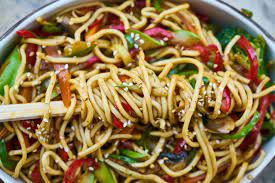

Biriyani

Biryani is a spiced mix of meat and rice, traditionally cooked over an open fire in a leather pot. It is combined in different ways with a variety of components to create a number of highly tasty and unique flavor combinations
Noodles
Noodles are a type of food made from unleavened dough which is either rolled flat and cut, stretched, or extruded, into long strips or strings. Noodles are a staple food in many cultures
Burgar

A hamburger, or simply burger, is a food consisting of fillings—usually a patty of ground meat, typically beef—placed inside a sliced bun or bread roll. Hamburgers are often served with cheese, lettuce, tomato, onion, pickles, bacon, or chilis;
Pizza

Pizza (Italian: [ˈpittsa], Neapolitan: [ˈpittsə]) is a dish of Italian origin consisting of a usually round, flat base of leavened wheat-based dough topped with tomatoes, cheese, and often various other ingredients
FRIED RICE

Fried rice is a dish of cooked rice that has been stir-fried in a wok or a frying pan and is usually mixed with other ingredients such as eggs, vegetables, seafood, or meat. It is often eaten by itself or as an accompaniment to another dish.